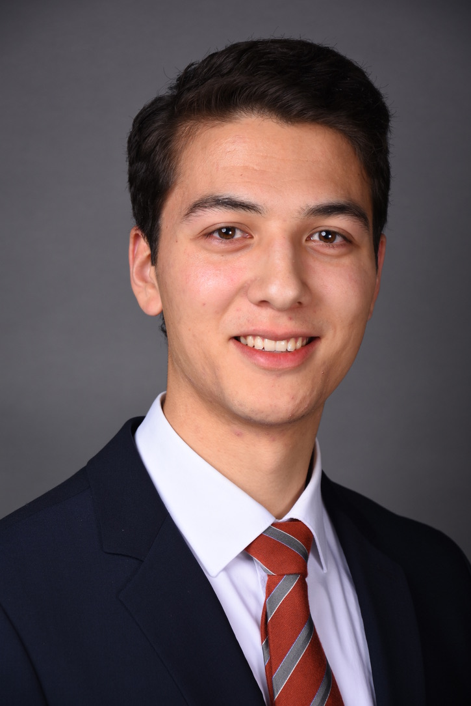

Resume: Tobias Muehlhan

Profile Summary
Tobias Muehlhan is an aspiring CFA charterholder with significant experience in audit, asset management, business transformation, and controlling.
His educational background at TU Munich, language skills, and IT proficiency contribute to his strong qualifications in the finance and investment industry.
Education
- Master of Science in Management and Technology (TUM-BWL) from Technical University of Munich (10/2016 – 04/2020)
- Exchange Semester: Chinese, Business Administration at Harbin Institute of Technology (HIT), Harbin, China, and South China University of Technology (SCUT), Guangzhou, China (09/2017 – 06/2018)
- Bachelor of Science in Management and Technology (TUM-BWL) from Technical University of Munich (TUM), Munich, Germany (10/2012 – 08/2016)
Work Experience
-
Senior Associate at Ernst & Young GmbH, Munich, Germany (08/2020 - Present)
- Audit the asset management division of a global insurance company
- Conduct IFRS/IAS accounting for direct investments, fund investments, derivatives, IFRS notes, impairment, bank confirmation, and valuation
- Lead and instruct a team of 5-7 members
- Plan and communicate audit procedures with component teams in 15 countries globally
- Work on topics such as internal controls, process automation, and Solvency II
-
Internship at Allianz Asset Management GmbH, Munich, Germany (04/2019 - 07/2019)
- Identify relevant artificial intelligence start-ups and technologies in institutional sales, fixed income, and operative risk
- Organize a start-up hackathon for Allianz Global Investors with 3 use cases and 9 participating teams in Hong Kong
- Execute ad-hoc tasks for the AAM Executive Office, such as market analysis for a peer group report
- Working Student at Linde AG, Munich, Germany (04/2016 - 07/2016)
- Report monthly sales reporting of central functions
- Prepare forecasts and yearly planning of functional budgets
- Support goal setting and achievement processes
- Internship at Robert Bosch (SEA) Pte Ltd, Singapore (09/2014 - 03/2015)
- Support financial analysis of business performance in Asia-Pacific countries
- Prepare monthly sales reports, charts, and presentation slides for upper management of APAC
- Maintain and develop reporting databases
Skills
- Audit and Accounting: IFRS/IAS accounting, financial analysis, internal controls, bank confirmation, valuation, impairment.
- Asset Management: Audit of asset management divisions, fund investments, direct investments, portfolio optimization, CFA candidate.
- Financial Analysis: Market analysis, financial performance evaluation, reporting databases, forecasting, goal setting.
- Start-up and Innovation: Identification of relevant AI start-ups, technology trends, start-up hackathon organization.
- Language Proficiency: Fluent in English, Native German speaker, proficient in Mandarin/Cantonese, basic French.
- IT Skills: MS Office (Word, Excel, Outlook, PowerPoint), SCD (Investment Mgmt. System), R, VBA, Alteryx, Bloomberg Terminal (BMC).
>> hobbies
>> contact me